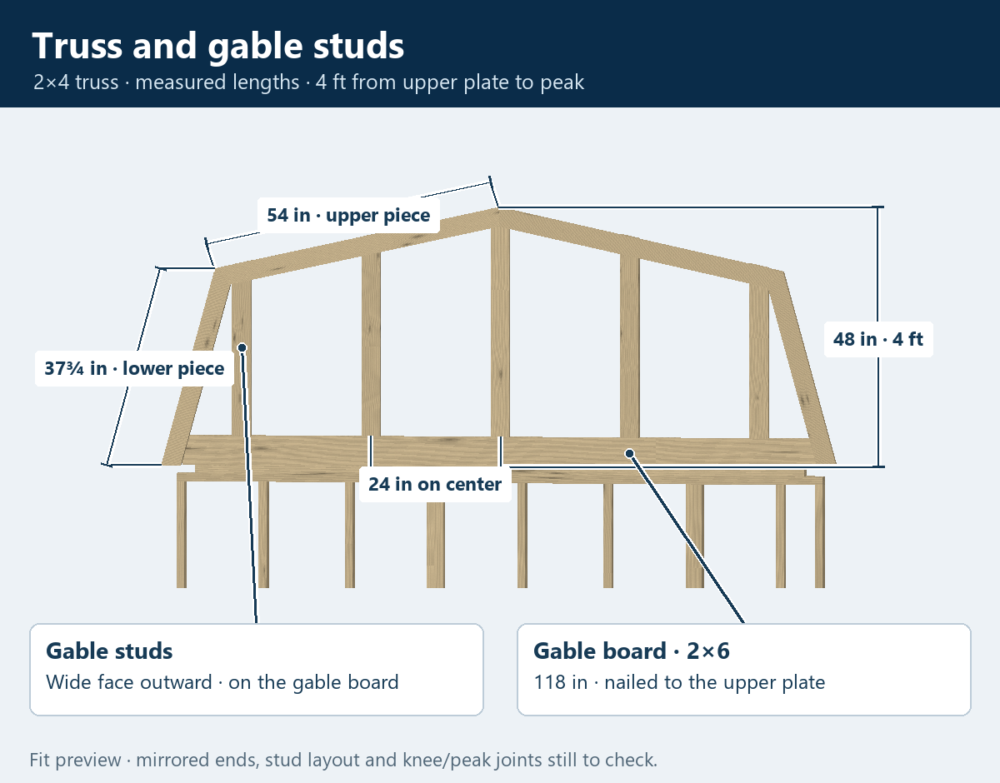
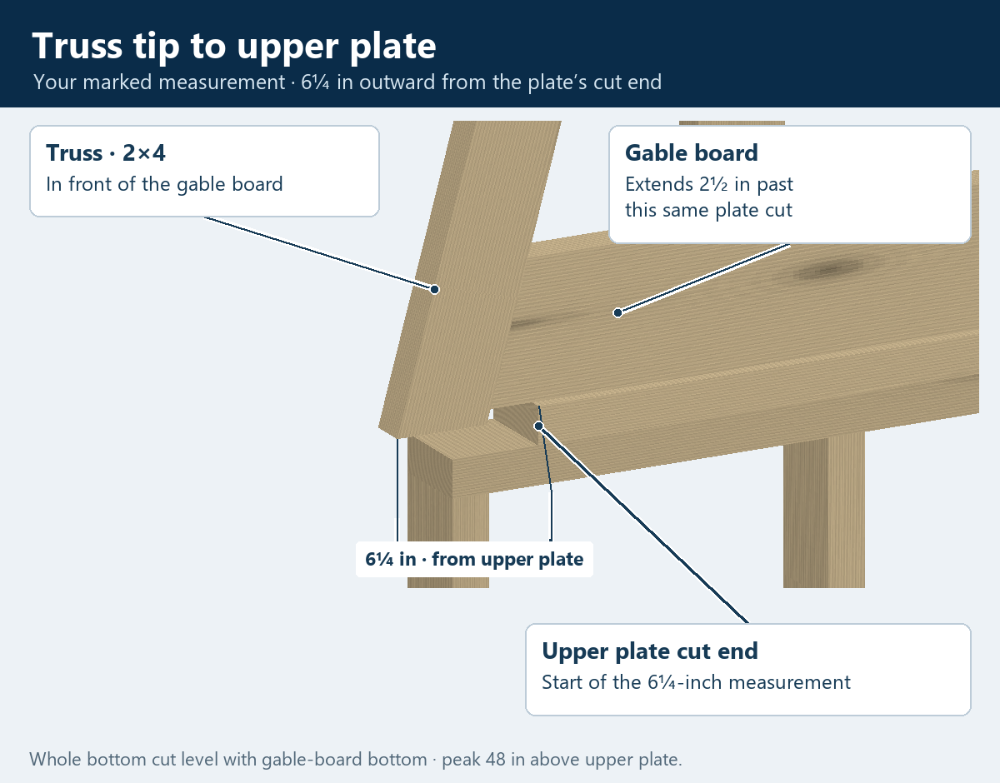

10 × 16 · End wall · Fit preview
Truss and gable studs
The 2×4 truss goes against the front face of the gable board, with its whole bottom cut level with the gable board’s bottom and the upper plate’s top. The upper piece is 54 inches and the lower, steeper piece is 37¾ inches, measured between their longest points. The highest peak is 4 feet above the top of the upper plate.
The truss above the end wall

Your 6¼-inch measurement

Measurements and fit
- Truss lumber
- 2×4 nominal · 1½ × 3½ inches actual.
- Upper piece leading to the peak
- 54 inches between its longest points.
- Lower, steeper piece
- 37¾ inches between its longest points.
- Peak height
- 48 inches above the top of the upper plate · calculated 127½ inches above flooring.
- Gable studs
- Facing outward, seated on the gable board, 24 inches on center.
- Tip-to-tip width in this mirrored preview
- 113-inch upper plate + 6¼ inches at each end = 125½ inches.
Fit choices to check: this preview mirrors the marked end at the opposite end, uses shared knee/peak miters, and centers a 2×4 gable stud under the peak with its wide face outward. The remaining studs follow at 24 inches on center. Their tops are shown behind the truss face as a provisional connection. These fit choices and the calculated joint angles still need your review.